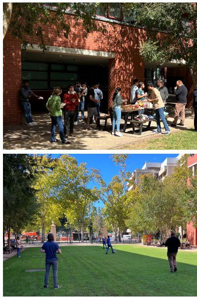

From Factory Floors to Cyber Frontiers
I'm a researcher and lecturer at Adelaide University — driven by a single belief: the most important systems in the world should never fail. That conviction started on industrial assembly lines and has led me through national defense labs, health-tech startups, and lecture halls.
Multidisciplinary, industry-driven research from vulnerability mitigation and AI-assisted secure code generation to automated resilience in mission-critical environments — always grounded in solid theoretical foundations.
Transform software security from reactive patch management into proactive, self-healing, trustworthy ecosystems — letting organizations harness Generative AI safely without compromising their infrastructure.
Learning what "zero downtime" really means
Long before writing a line of security research, I was managing a team of 20+ technicians on high-speed laminator lines at Tetra Pak in Pakistan. Every shift was a live lesson in what system failure actually costs — not just in dollars, but in halted operations and disrupted supply chains. Later, supervising production quality at Prolife Foods in Australia deepened this: you cannot protect a system you don't understand down to the sensor level.
Those years gave me something no university course could: an instinct for telemetry, a tolerance for operational ambiguity, and a genuine respect for the people running the machines.
Simulating attacks no one wants to see in real life
Joining the University of Adelaide's cyber research group, I became part of a team investigating something I'd only read about: the real-world resilience of military Command-and-Control (C2) networks. Funded by the Cyber Security CRC, Defence Science and Technology Group, and Cisco, we built attack simulators, mapped vulnerability cascades, and designed autonomous isolation protocols that didn't need a human in the loop to respond.
One key insight stayed with me: adversaries don't knock — they slip through the cracks while you're watching the front door. Resilience means anticipating the cracks.

What happens when you apply AI to human friction
The most technical algorithm in the world means nothing unless it actually reduces someone's burden. Over two years, I tested that conviction inside two fast-moving startups:
Built a machine-learning recommendation engine that matches differently abled children and their families with the right therapists — turning weeks of exhausting searches into a few clicks.
Chief Project Officer, securing a A$100k Seed-Start grant from the SA Department of State Development to deploy AI-powered matching for international migrants navigating complex relocations.
Four years of deep research, 15+ projects, and an important lesson in community
My PhD was intense — 15+ concurrent R&D initiatives spanning software security, microservice autoscaling, and LLM vulnerability analysis, resulting in 12 peer-reviewed papers in top IEEE and ACM venues.
But the hours I spent outside the lab were just as formative. As the elected Postgraduate Researchers (HDR) Representative and GEDI (Gender, Equity, Diversity, and Inclusion) Representative, I learned that great research communities don't happen by accident — they're built through small, consistent acts of inclusion.



Deploying AI in contested environments — and in lecture halls
A$250,000 Defence Trailblazer Project
Project Manager for the Adaptive Dynamic Application Orchestrator with DEWC Services — building an AI platform that constructs and deploys tactical mission software in contested and degraded environments.
Lecturer at Adelaide University
Teaching Cybersecurity, AI, and Software Engineering — designing courses where students dissect real attack scenarios, build production models, and graduate with the confidence to solve hard problems.

Industry & Government Partners
I collaborate with leading global technology organisations, government departments, defence research groups, and startup ecosystems across Australia and internationally: